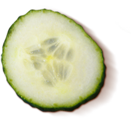
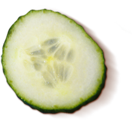

Компания
Более 14 лет назад, когда компания «FORES Sauсe Company» находилась только в стадии идеи, мы подумали: если есть на свете вещи, которые неизменно вызывают у всех положительные эмоции – улыбка ребенка, любимая музыка, приятные воспоминания детства – то почему мы не можем создать соус, который бы действовал на людей точно так же? Задача была не из легких, но мы понимали, что от того, насколько мы справимся с ее выполнением, зависит успех всего предприятия. Находились пессимисты, которые заявляли, что угодить вкусам всех и каждого практически невозможно, не стоит даже пробовать – просто постарайтесь создать неплохой майонез, разрекламируйте его получше, и прибыль вам гарантирована. Возможно, такой подход и был бы единственно правильным … если бы не закат солнца, если бы не шум волн, если бы не существование всего того, что заставляет любого из нас на время забывать обо всем на свете и просто наслаждаться жизнью.
Ведь согласитесь – больше всего радости подчас доставляют самые простые, «настоящие» вещи. Когда мы задумались над тем, каким же должен быть идеальный майонез, то ответ пришел сам собой – он должен быть настоящим, таким, каким его создал в 1756 году великий французский повар Франсуа Форес, готовивший для самого кардинала Ришелье. Сначала мы огорчились – ведь с момента создания первого майонеза прошло слишком много времени, чтобы его рецепт дошел до нас в первозданном виде. Но оказалось, что рецепты, как и рукописи, не горят, и нам удалось сделать практически невозможное – восстановить оригинальную рецептуру, благодаря которой как гурманы, так и просто любители вкусно поесть вот уже более 14 лет могут наслаждаться вкусом идеальных соусов – вкусом майонезов «Форес».
Существует мнение, что жизнь похожа на салат – сколь бы хороши ни были ингредиенты, главное – это хороший соус, то есть – наше к жизни отношение. Соус из гармонии и оптимизма придаст незабываемый вкус даже самым обыденным событиям, в то время как пресная смесь из пессимизма и негатива в одночасье отобьет желание прикасаться к любым деликатесам, которые преподносит нам жизнь. В этом и заключается наша философия – с лучшим майонезом любое, пусть даже самое простое блюдо, приобретет незабываемый вкус и доставит вам больше удовольствия, чем любой кулинарный шедевр, заправленный посредственным соусом. Выбирая наши майонезы, Вы можете быть уверены, что мы сделали все возможное для того, чтобы любые Ваши кулинарные фантазии – от традиционных салатов до самых изысканных яств – предстали перед Вами в совершенно новом свете.
История
Компания «FORES Sauсe Company» была основана в 1995 году. С тех пор она прошли путь от небольшого цеха до масштабного современного предприятия. Сегодня, оглядываясь назад, можно смело сказать, что основная задача, которую мы ставили перед собой в начале пути, достигнута – нам удалось создать гамму соусов, которые могут угодить вкусам любого человека. В стремлении приготовить лучший майонез, мы объединили воедино проверенные веками классические рецепты и современные технологии производства, сделав все возможное для того, чтобы сегодня все могли наслаждаться соусом, который действительно имеет право носить гордое имя Майонез.
На протяжении веков приготовление майонеза считалось настоящим искусством, поскольку любые, даже самые незначительные погрешности в количестве и качестве ингредиентов этого благородного соуса приводят к изменению его вкуса. Сегодня мы гордимся тем, что, восстановив классические рецепты и объединив их с возможностями современного оборудования, нам удалось показать украинским потребителям, каким был первозданный вкус майонеза в тот момент, когда этот соус только начинал обретать популярность среди поваров и гурманов XVIII века.
Воспринимая кулинарию как искусство и почитая наследие великих поваров прошлого, наша компания движется в ногу с современными тенденциями производства майонезов, что позволяет нам отвечать запросам украинских потребителей в качественных продуктах. «FORES Sauсe Company» сегодня – это сплоченная команда профессионалов, работающих на предприятии, которое является лидером в своей отрасли по уровню технической оснащенности, осуществляет постоянный лабораторный контроль качества продукции, владеет уникальной рецептурой и как следствие уже более 10 лет пользуется доверием потребителей по всей Украине.
Преимущества и возможности
Более 14 лет назад, когда компания «FORES Sauсe Company» находилась только в стадии идеи, мы подумали: если есть на свете вещи, которые неизменно вызывают у всех положительные эмоции – улыбка ребенка, любимая музыка, приятные воспоминания детства – то почему мы не можем создать соус, который бы действовал на людей точно так же? Задача была не из легких, но мы понимали, что от того, насколько мы справимся с ее выполнением, зависит успех всего предприятия. Находились пессимисты, которые заявляли, что угодить вкусам всех и каждого практически невозможно, не стоит даже пробовать – просто постарайтесь создать неплохой майонез, разрекламируйте его получше, и прибыль вам гарантирована. Возможно, такой подход и был бы единственно правильным … если бы не закат солнца, если бы не шум волн, если бы не существование всего того, что заставляет любого из нас на время забывать обо всем на свете и просто наслаждаться жизнью.
Ведь согласитесь – больше всего радости подчас доставляют самые простые, «настоящие» вещи. Когда мы задумались над тем, каким же должен быть идеальный майонез, то ответ пришел сам собой – он должен быть настоящим, таким, каким его создал в 1756 году великий французский повар Франсуа Форес, готовивший для самого кардинала Ришелье. Сначала мы огорчились – ведь с момента создания первого майонеза прошло слишком много времени, чтобы его рецепт дошел до нас в первозданном виде. Но оказалось, что рецепты, как и рукописи, не горят, и нам удалось сделать практически невозможное – восстановить оригинальную рецептуру, благодаря которой как гурманы, так и просто любители вкусно поесть вот уже более 14 лет могут наслаждаться вкусом идеальных соусов – вкусом майонезов «Форес».
Производство
Все составляющие наших майонезов хранятся в современных складских помещениях при температуре, позволяющей сохранить их первоначальные вкусовые качества. При производстве мы используем только высококачественное рафинированное дезодорированное подсолнечное масло, как известно, являющееся основным компонентом майонеза. На всех стадиях производства наших майонезов ведется постоянный контроль качества, который обеспечивают современные бактериологическая и физико-химическая лаборатории. Строжайшее соблюдение всех норм, начиная от определения показателей безопасности исходных ингредиентов и заканчивая контролем качества готового майонеза, гарантирует чистоту, безопасность и неизменные вкусовые качества нашей продукции.
Если ты хочешь добиться идеального результата, то нельзя идти на компромиссы даже в мелочах – именно этим принципом мы руководствовались при организации нашего производства. Лучшие ингредиенты, передовые технологии, оригинальная запатентованная рецептура и постоянный контроль качества – вот, что обеспечивает успех нашей продукции. Наше отношение к тому, чем мы занимаемся, можно сформулировать очень просто – или лучшее, или ничего. Именно поэтому на всех этапах производства майонезов мы делаем все возможное для того, чтобы гарантировать покупателю неизменно высокое качество наших соусов.
Наши майонезы создаются на оборудовании швейцарско-немецкой компании FrymaKoruma – признанного мирового лидера в производстве оборудования для пищевой промышленности. Смешивание ингредиентов наших майонезов происходит в условиях вакуума, что позволяет избежать контакта с окружающей средой и сохранить натуральный вкус конечного продукта. Чтобы вкус майонезов сохранялся как можно дольше, необходима качественная упаковка. Фасовка наших майонезов проходит на оборудовании производства лидирующих компаний Германии, Израиля, Польши и Болгарии. Упаковка майонезов происходит в условиях, исключающих их контакт с воздухом, что обеспечивает более длительное хранение нашей продукции.